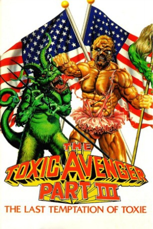

Country:United States, 102 minutes
Spoken languages:English
Genres:Comedy, Horror, Sci-Fi
Director(s):Lloyd Kaufman, Michael Herz
Writer(s):Lloyd Kaufman, Gay Partington Terry
Video Codec:Unknown
Number: 2575


Certification:R
Storyline:
Toxie finds he has nothing to do as a superhero, as he has ridden his city of evil. So he decides to go to work for a major corporation, which he discovers may be the evilest of all his adversaries.
Cast:

Medium: Original DVD,
Comments: Part of: The Complete Toxic Avenger
Loaned: No
Aspect ratio: Unknown